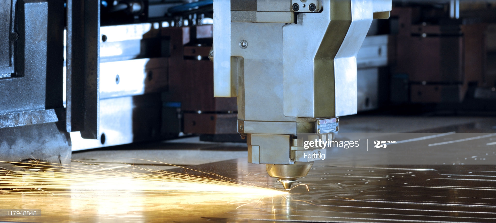

With Quality and innovation as our forte, We are the best in the domain of machining operations.
Our Services
CNC Bending
We at Goodwill Industries, also offer shearing and bending service. Equipped with contemporary shearing and bending machines. We offer sheet metal cutting service that in turn are mostly used in motor, electrical and automobile industries. Our shearing and bending machines has a simple construction, nice design, sensitive and reliable control and low energy consumption. Our bending & shearing service significantly reduce the need for welds and fittings while increasing the flow efficiency of the process. Saving both time and money, our shearing and bending service significantly reduce welding of piping systems and produce multiple bent assemblies.

CNC Laser Cutting
At Goodwill Industries, we provide world-class CNC Laser Cutting Service. Equipped with latest laser machines, we apply intense heat of the laser that literally vaporizes or melts the material in the beam’s path. Having exceptionally fine focal point, this beam is controllable in nature. This permits very tight tolerance control, and concentrates the heat to a smaller area, or heat affected zone (HAZ) and as a result, there is the least part distortion of any other heat related cutting technology. Through our CNC Laser Cutting Service, we have a fine focal point and assure a very narrow kerf in even the hardest materials facilitating accurate dimensional control.

Water Jet cutting
We are one of the few names to offer Water Jet Technology based cutting solutions, Service in India. We provide the services to cut various materials like Aluminum, Titanium and Glass with Water jet technology based cutting solutions to satisfy industry Certain and specific needs in cutting and also provide the services to cut any material of thickness upto 250mm by delivering with exceptional quality on time. We offers the valuable extra services like designs in glass ,cutting the stainless steels with thickness 1mm to 250mm and marbles artistic shapes with high quality and good finishing. We are offering the serivices to cut the hardening materials in a multi-axis and cost effective process and value added services like automotive interior and exterior components can be cut for huge range.